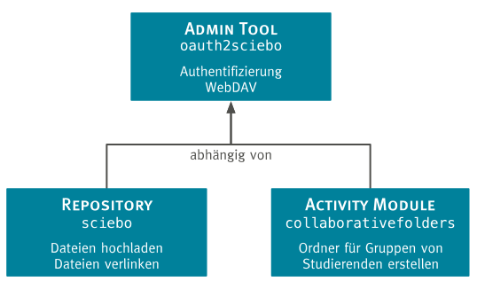

Software Architektur
Moodle ist eine Open Source Online Lehr- und Lernplattform in Form einer Webapplikation, welche an zahlreichen Universitäten und diversen anderen Institutionen im Bildungssektor weltweit als Kommunikationswerkzeug eingesetzt wird.
Zur Umsetzung des Projektziels, musste moodle um nötige Funktionalitäten ergänzt werden, die weder durch den moodle Core bereitgestellt werden, noch mit Hilfe von externen Plugins hinzugefügt werden konnten. Im Folgenden wird beschrieben, wie moodle im Rahmen des Projektes erweitert wurde und welche Auswirkungen sich daraus ergaben.
Übersicht über die Plugin-Struktur
Moodle Plugins dienen dazu um im Core angebotene Funktionalitäten dahingehend zu erweitern, sodass diese den individuellen Bedürfnissen des Nutzers entsprechen. Daher eignete sich die Implementierung solcher Plugins ideal zur Umsetzung der definierten Integrationsszenarien. In moodle wird ein plugin einer Kategorie zugeordnet, welche eine Bestimmte Art von Funktionalität repräsentiert.
Im Laufe des Projekts hat man sich auf folgende zu implementierende Plugins geeinigt:
| Plugintyp | Beschreibung | Zweck für das Projekt |
|---|---|---|
admin tool |
Bietet Dienste zur Site-Administration an | Verwaltung der Authentifizierung mittels OAuth 2.0 |
repository |
Stellt Verbindung zu einer externen Datenquelle her | Datenbeschaffung aus Sciebo |
activity |
Stellt Aktivität in einem Kurs zur Verfügung | Bereitstellung eines Ordners für kollaborative Arbeit |
Zwar bietet das Repository Plugin die nötige Funktionalität über die gegebene Schnittstelle um Dateien aus Sciebo nach moodle hochzuladen, jedoch kann über die Schnittstelle hinaus keine weitere Funktionalität darin implementiert werden. Weil daher nur eine beschränkte Anzahl von Integrationsszenarien abgedeckt werden würde, hat man sich für ein ergänzendes Activity Module enschieden. Basierend auf dieser Entscheidung erschien es als sinnvoll den Authentifizierungsprozess ebenfalls zentral zu implementieren, sodass allen zusätzlichen Plugins der Zugriff auf das Verfahren ermöglicht wird.
Abhängigkeiten
Die aus der Aufteilung der Funktionen in verschiedene Plugins resultierenden Abhängigkeiten werden in folgender Abbildung dargestellt:

Zu beachten ist, dass eine möglichst hohe Flexibilität und Modularität bei dem Entwurf der Software Architektur erzielt
werden sollte. Das führt zwar mit sich, dass funktionale Plugins (also das repository und das activity Plugin) nicht
eigenständig ohne das admin tool existieren können, allerdings wird weiteren, in Zukunft entwickelten Plugins ebenfalls
Zugriff auf die OAuth 2.0 Schnittstelle in Sciebo bzw. ownCloud ermöglicht,
wodurch sich das Projektergebnis zu einer guten Wiederverwendbarkeit qualifiziert.
Funktionsübersicht
Die in den verschiedenen Plugins angebotenen Funktionalitäten können wie folgt zusammengefasst werden:
Admin Tool:oauth2sciebo- Umfasst sowohl OAuth 2.0, als auch WebDAV Client.
- Steuert Protokollablauf von OAuth 2.0 und verwaltet alle dazu nötigen Informationen.
- Stellt das Verbindungsstück von moodle zu Sciebo bzw. ownCloud
Repository:sciebo- Bewerkstelligt die Datenbeschaffung aus Sciebo bzw. ownCloud nach moodle.
- Ermöglicht den Upload von Dateien aus einer persönlichen Sciebo Instanz.
- Ermöglicht die Verlinkung von Dateien aus Sciebo in moodle.
Activity Module:collaborative folders- Ermöglicht die Erstellung und Freigabe von Ordern in Sciebo für bestimmte Gruppen in moodle.